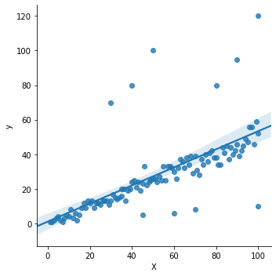
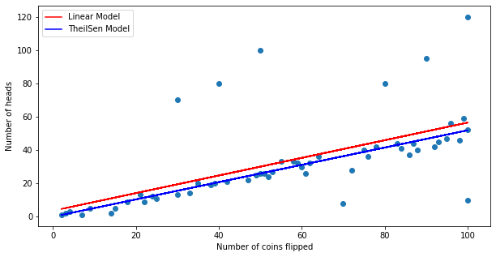
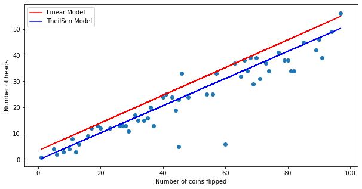

Comparison Between Theil-Sen Regressor and Simple Linear Regression
Theil-Sen Regression
Objectives: To show Theil-Sen Regression is more robust against outliers compared to Simple Linear Regression
#import models and plotting tools
from sklearn.linear_model import TheilSenRegressor, LinearRegression
from sklearn.model_selection import cross_val_score, train_test_split
from sklearn.metrics import r2_score
import pandas as pd
import numpy as np
import matplotlib.pyplot as plt
import seaborn as sns
from IPython.core.display import HTML
np.random.seed(42)
Create a dataset with X as the number of coin flips and y as the number of heads from the coin flips.
Then, add 5 outliers of 100% heads and 100% tails into the data.
# Create a dataset
def coin():
return np.random.choice(['Heads', 'Tails'])
X = list(range(1,101))
df = pd.DataFrame({
'X' : list(range(1,101)),
'y' : [sum([1 if coin() == 'Heads' else 0 for _ in range(i)]) for i in X]
})
# df.head()
#Add outliers to the dataframe
df_outliers = pd.DataFrame({
'X' : [ 50, 30, 40, 35, 45, 80, 90, 100, 100, 60, 70],
'y' : [ 100, 70, 80, 20, 5, 80, 95, 10, 120, 6, 8]
})
df = pd.concat((df,df_outliers))
df.info()
<class 'pandas.core.frame.DataFrame'>
Int64Index: 111 entries, 0 to 10
Data columns (total 2 columns):
X 111 non-null int64
y 111 non-null int64
dtypes: int64(2)
memory usage: 2.6 KB
Plot the dataset to see the outliers.
sns.lmplot('X', 'y', data=df);

Here, I did a train test split by splitting the data into 50/50.
# Do a Train-test-split
X = df[['X']]
y = df['y']
X_train, X_test, y_train, y_test = train_test_split(X, y, train_size=0.5, random_state=42)
Instantiate the linear regression model and train it with X_train and y_train from the train test split.
Then, score the model with X_train, X_test and do a cross validation of 5 folds from the original data to find the R2 scores.
# Create linear model
linear_model = LinearRegression()
linear_model.fit(X_train, y_train)
print(linear_model.score(X_train, y_train))
print(linear_model.score(X_test, y_test))
cross_val_score(linear_model, X, y, cv=5).mean()
0.3788042856591475
0.7084611406650192
-0.28135931886744714
Instantiate the TheilSen regresson and train it with X_train and y_train from the train test split.
Then, score the model with X_train, X_test and do a cross validation of 5 folds from the original data to find the R2 scores.
# Create Theilsen model
theilsen_model = TheilSenRegressor()
theilsen_model.fit(X_train, y_train)
print(theilsen_model.score(X_train, y_train))
print(theilsen_model.score(X_test, y_test))
cross_val_score(theilsen_model, X, y, cv=5).mean()
# theilsen_model.intercept_
0.3525989639206396
0.8499956799863967
0.2970249639222725
Plot the prediction from each model with X_train to have a better understanding of what happened.
yhat_train_linear = linear_model.predict(X_train)
yhat_train_theilsen = theilsen_model.predict(X_train)
plt.figure(figsize=(10,5))
plt.xlabel('Number of coins flipped')
plt.ylabel('Number of heads')
plt.plot(X_train, yhat_train_linear, color='r', label='Linear Model')
plt.plot(X_train, yhat_train_theilsen, color='b', label='TheilSen Model')
plt.legend()
plt.scatter(X_train, y_train);

Plot the prediction from each model with X_test
yhat_test_linear = linear_model.predict(X_test)
yhat_test_theilsen = theilsen_model.predict(X_test)
plt.figure(figsize=(10,5))
plt.xlabel('Number of coins flipped')
plt.ylabel('Number of heads')
plt.plot(X_test, yhat_test_linear, color='r', label='Linear Model')
plt.plot(X_test, yhat_test_theilsen, color='b', label='TheilSen Model')
plt.legend()
plt.scatter(X_test, y_test);

We can see that even though linear regression scores well with the X_train, it doesn't do well with X_test and the cross validation.
From the graph, we can see that TheilSen model ignores the outliers and tends to fit the majority of the y values whereas the linear model shifts upwards/downwards due to outliers.
Additional notes from research:
-
Theil-Sen Regressor has a breakdown point of about 29.3% in case of a simple linear regression which means that it can tolerate arbitrary corrupted data (outliers) of up to 29.3% in the two-dimensional case.
-
The slope/coefficient is the median of all slopes between paired values.